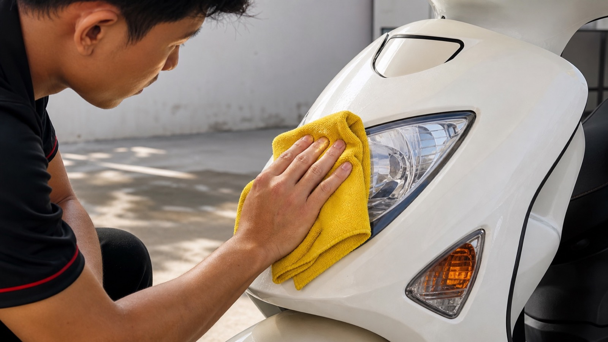

Мы покупаем подержанные байки, поэтому перед тем как поставить их в каталог, не просто делаем красивую фотографию. Сначала смотрим технику, затем устраняем понятные мелочи, моем и полируем. Цель простая: покупатель должен понимать, что получает, а не находить базовые проблемы в первый же день.
Сначала сверяем документы и объём 49,5/50cc, затем смотрим байк вживую: холодный запуск, ровность работы двигателя, посторонние звуки, течи и поведение на короткой поездке. Если есть вопрос по состоянию, он важнее блестящего пластика.
Это не обещание, что у старого байка никогда не возникнет поломка. Это нормальная базовая проверка, которую мы делаем до продажи, а не перекладываем на нового владельца.
По результату осмотра меняем масло и те расходники, которые действительно требуют замены. Не меняем детали «для галочки» и не прячем неисправность косметикой: если байк требует серьёзных работ и экономика не сходится, его просто не берём в продажу.
Когда с базой всё понятно, байк идёт на мойку и полировку. Чистый пластик и сиденье — это приятно, но не замена живому мотору и рабочим тормозам. Поэтому в объявлении стараемся показывать байк честно, а не только удачный ракурс.
Не стесняйся попросить видео запуска и короткой езды, спросить, что проверяли и какие работы сделали. А чтобы самостоятельно оценить подержанный вариант, посмотри материалы о реальном состоянии и пробеге и о проверке 50cc по документам.